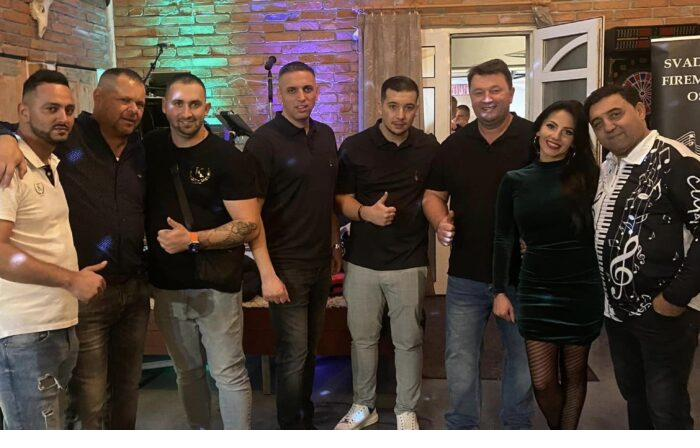

Vianočný firemný večierok pri Košiciach: ako ho zorganizovať
Firemný či vianočný večierok je odmena celému tímu za rok práce — a zároveň príležitosť stretnúť sa v inom prostredí ako kancelária. Poradíme vám, ako ho naplánovať bez stresu: kedy rezervovať termín, ako vybrať priestor podľa počtu ľudí, čo dať na stôl a na čo nezabudnúť pri logistike a fakturácii.

1. Prečo firemný večierok mimo mesta funguje
Veľkou výhodou priestoru za mestom je súkromie a pokoj. V Stodole Staré časy si môžete prenajať celý areál len pre svoju firmu — bez cudzích hostí, bez hluku z ulice a bez kompromisov pri programe. Tím sa uvoľní inak ako v reštaurácii v centre, kde sa nedá ani poriadne porozprávať.
A pritom to nie je ďaleko: Trstené pri Hornáde je len 20 km od Košíc, s pohodlným príjazdom a parkovaním priamo v areáli. Kolegovia to k vám majú na skok, no zároveň ste mimo ruchu mesta — to je kombinácia, ktorá firemnému večierku svedčí.
2. Kedy rezervovať vianočný termín
December je každý rok ten istý príbeh — termíny sa plnia skoro. Obľúbené piatky a soboty pred Vianocami bývajú obsadené už počas leta a jesene. Ak teda viete, že chcete usporiadať vianočný večierok, neodkladajte rezerváciu na november — vtedy už zostávajú prevažne všedné dni alebo skoršie termíny.
Odporúčanie je jednoduché: orientačný dátum si zarezervujte v lete alebo na začiatku jesene. Aj keď ešte nepoznáte presný počet ľudí, držať si termín sa oplatí — finálne detaily doladíte neskôr.
3. Výber priestoru a kapacita
Priestor vyberajte podľa veľkosti tímu a formátu večera. V Stodole Staré časy máte na výber:
- Hlavná sála — do 80 hostí, s vlastným pódiom a ozvučením pre kapelu, DJ alebo príhovor. Prenájom sály je 300 €. Ideálna na klasický večierok celej firmy.
- Salónik — do 30 osôb, prenájom 80 €. Hodí sa pre menšie tímy a oddelenia, ktoré chcú komornejšie posedenie.
- Exteriér a dvor — priestor na teambuildingové aktivity, kotlíkový guláš či opekanie. Skvelý doplnok k indoor programu pri miernejšom počasí.
Pri rezervácii vždy uveďte predpokladaný počet ľudí — podľa toho vám odporučíme priestor a rozloženie stolov.
4. Formát jedla: raut alebo sediaca večera?
Pri firemnom večierku sa najčastejšie rozhoduje medzi rautom (bufetom) a sediacou večerou. Bufet podporuje neformálnu atmosféru a miešanie kolegov — ľudia vstávajú, presúvajú sa, rozprávajú. Sediaca večera je formálnejšia a hodí sa, keď je súčasťou programu príhovor alebo oceňovanie.
Z nášho menu si môžete poskladať napríklad:
- Studený bufet — nárezová či gazdovská misa za 65 €/kg, vhodná na privítanie hostí.
- Teplý bufet — maďarský guláš za 14,50 €, vyprážané rezne a ďalšie poctivé hlavné chody.
- Open bar nealko — 10 €/osoba, aby ste sa nemuseli starať o jednotlivé objednávky nápojov.
Kompletnú ponuku chodov, bufetov aj nápojov nájdete v našom menu. Druh mäsa, prílohy aj zloženie misy vieme prispôsobiť počtu a chuti vášho tímu.
5. Program a logistika
Dobrý večierok stojí a padá na pripravenom programe a vyriešenej logistike. Na čo myslieť:
- Pódium pre kapelu alebo DJ — hlavná sála má pódium aj ozvučenie, takže netreba riešiť techniku externe.
- Miesto na príhovor — rezervujte si v programe čas pre konateľa či vedúceho na poďakovanie tímu.
- Parkovanie — priamo v areáli, takže kolegovia z okolia môžu prísť autom bez starostí.
- Fakturácia na firmu — celú akciu vystavíme na faktúru s vaším IČO/IČ DPH.
- Obsluha po 23:00 — pri predĺžení večera účtujeme príplatok za obsluhu 10 €/hod na čašníka.
6. Praktický checklist
Aby ste na nič nezabudli, prejdite si tento zoznam ešte pred odoslaním rezervácie:
- Termín — vybraný dátum (vianočné termíny rezervujte v lete/jeseň).
- Počet ľudí — orientačný počet hostí, aby sme odporučili priestor.
- Priestor — hlavná sála, salónik alebo aj exteriér.
- Menu a forma — raut/bufet vs. sediaca večera.
- Nápoje — open bar, prípitky či konzumácia podľa objednávky.
- Program — kapela/DJ, príhovor, teambuilding, guláš.
- Doprava a parkovanie — odvoz kolegov, počet áut.
- Fakturácia — fakturačné údaje firmy (názov, IČO, adresa).
Plánujete firemný večierok pri Košiciach?
Pozrite si, čo všetko pre firemné akcie zabezpečíme, alebo si rovno overte voľný termín.
Firemné podujatia Overiť termínČasto kladené otázky
Dokedy treba rezervovať vianočný termín?
Predvianočné piatky a soboty sa plnia už počas leta a jesene. Ak chcete istý termín v decembri, odporúčame rezervovať v lete alebo na začiatku jesene — detaily doladíme neskôr.
Viete vystaviť faktúru na firmu?
Áno. Celú akciu vystavíme na faktúru s vašimi fakturačnými údajmi (názov firmy, IČO, prípadne IČ DPH a adresa). Stačí ich uviesť pri rezervácii.
Je možné prenajať celý areál súkromne?
Áno, celý areál si môžete prenajať len pre vašu firmu — bez cudzích hostí. Zabezpečíte si tak úplné súkromie a voľnosť pri programe aj časovom rozsahu večera.